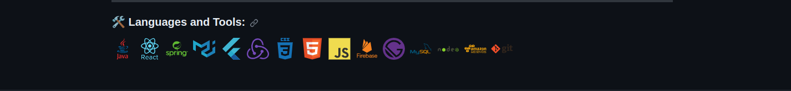
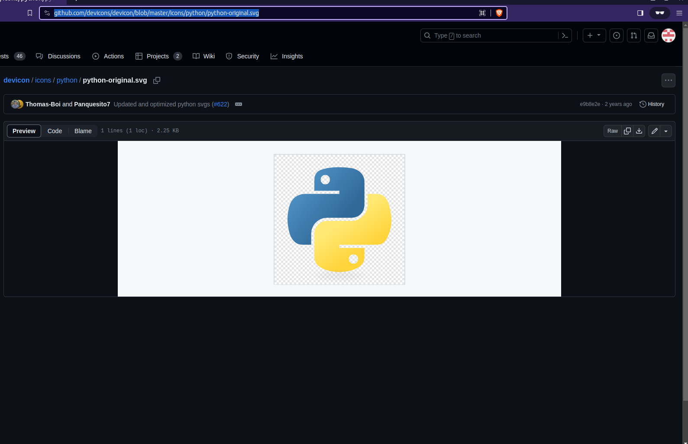
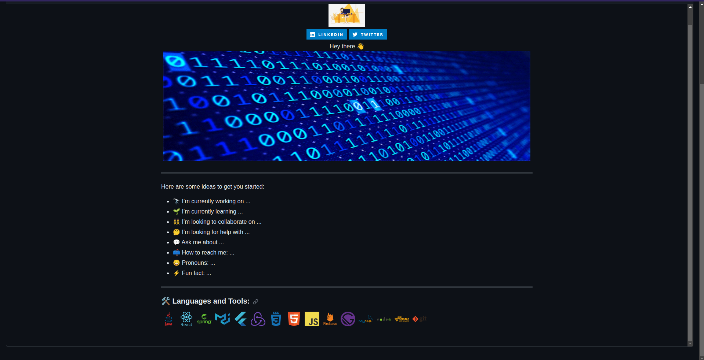

Lesson_02
Creating A Github Profile README.md file
In this lesson, we will embark on a journey to create your very own profile page on github using Markdown, a lightweight and easy-to-use syntax for styling all forms of writing on the web. Markdown is widely used because it allows you to maintain the readability of plain text while offering the styling capabilities of HTML. Our goal is to familiarize you with the foundational elements of Markdown to transform plain text into a rich, well-formatted document.
Throughout the lesson, we will explore the basic constructs of Markdown, such as headers, emphasis, lists, links, and images, which will serve as the building blocks for your profile page. You will learn how to structure content with different levels of headings and how to emphasize text using bold and italic styles to make your page more engaging.
Additionally, we will delve into creating ordered and unordered lists to organize your skills and achievements in a visually appealing manner. We will also cover the process of incorporating hyperlinks and images, enabling you to link to projects or personal works and add a personal touch with your photo.
By the end of this lesson, you will have crafted a personal profile page that not only tells your story but also showcases your newfound Markdown skills. This profile can serve as a starting point for your portfolio, a personal webpage, or a GitHub README file, providing a snapshot of your professional persona to the world. As a hands-on approach to learning, you will actively engage in writing Markdown, receiving immediate visual feedback, and iterating on your design to create a compelling and informative profile page.
Learning Objectives
Students will be able to recognize and apply markdown syntax to create structured and styled text documents.
Students will be able to organize content using headers to create clear hierarchy and flow within their profile page.
Students will be able to embed hyperlinks and connect their profile to personal projects, professional networks, or external references.
Students will be able to create a comprehensive and visually appealing profile page that can be shared and viewed on various platforms, including Github and personal blogs.
Lesson
What is a Github Profile README?
Since the beginning of this lesson, we’ve actually made mention of github profile readme, and I believe some of you don’t really have an idea what it is all about.
A GitHub profile README is a special repository that you can create to add a README file to your GitHub profile. It acts as a customizable “about me” section where you can introduce yourself, showcase your work, and share information about your interests, projects, or achievements.
When someone visits your GitHub profile, the content of this README is displayed prominently, so it’s a great way to make a first impression on people who are exploring your GitHub repositories or looking to learn more about you as a developer or contributor.
To create a GitHub profile README, you simply create a new repository that has the same name as your GitHub username. For example, if your username is octocat, you would create a repository named octocat. Inside this repository, you place a README.md file. Whatever you write in the README.md file using Markdown will appear on your GitHub profile.
Pictured below is what your github profile will be if you do everything right.
Creating a github profile README file
- Log in to GitHub.
- Click on + icon at top right of the page and select New Repository.

- A Create a new repository page opens. In the Repository name field, enter the username of your GitHub account. After entering the username, GitHub displays a message describing that you’re about to create a GitHub special repository.

Check the public checkbox under repository type to make the Github profile README visible to everyone who visits the Github profile page. If you don’t want users to see your Github profile README while it’s still in development, you can choose Private. Once done with editing the README, you can go to the repo settings to change it’s visibilty to Public.
Check the Add a README file checkbox. This will add a
README.mdfile where we’ll add the profile contents. The field values should look similar to the image below.

- Click on the Create repository button. A special repository is created successfully. Go to the repository you just created and you’ll see a README.md file added to the repository.

In the next few sections, we’ll add contents to our README.md file. We’ll use Github’s file editor to write and preview the changes. There are other text editor which you can use as well such as Vs Code Editor, Sublime Text, Atom etc. But making use of this editors, you will have to clone the repository on your local machine and run changes needed. You can look that up at your own free time.
But for this lesson, we shall be making use of Github file editor. Open the README.md file and click on the Edit this file icon (a pencil icon) on the top right of the repo page. As highlighted in the image below:

Adding GIFS and Social Links to your Github Profile README
Adding GIFS to your Github Profile README
Here’s an image of the content that will be added in this section:
{kind=link}
The Gif used in this section can be found here. I found this GIF on Giphy, which is full of free GIFs to use.
Go to the GIF Link and click on the Share button and then Copy GIF Link. We’ll add this copied link to an HTML img tag to display it in the Markdown file. We’re using the img tag as it’ll help us specify the width of the image.
In the Github file editor, replace the README.md file content with the following code:
<div id="header" align="center">
<img src="https://media.giphy.com/media/hpXdHPfFI5wTABdDx9/giphy.gif" width="100" />
</div>The src attribute points to the URL we copied in the previous step. Since all the contents in this section are center-aligned, we’ve wrapped the image in an HTML div tag with the align="center" attribute.
Note: Github converts the README Markdown to HTML and renders it on Github. After conversion, the HTML is sanitized, and for security reasons, it ignores certain HTML tags and attributes such as <script>, <style>, <style> etc. For this reason, we’ve used an align attribute instead of CSS.
Click on the Preview tab, the picture below is what you will get. 
Adding Social Network Links/Badges to your Github profile README
On this section, we will be adding social network badges to your github profile readme. On clicking this badges, it redirects users or visitors to their respective social networking sites. Badges of various social networks like Instagram, Facebook, Twitter, Medium(blog site), etc. But for this lessson, we shall only focus on two: LinkedIn and Twitter.
To get the respective badges for each social networks, we’ll use shields.io which provides various endpoints letting users create and customize social medial badges. We’ll use the URL and pass additional parameters to this URL to get the respective social media badges.
- The first parameter we will pass is
Label(This represents the social network site name that will appear on the badge) andColor(which represents the color of the social network badge respectively).Label-Color
In the case of our example being LinkedIn and Twitter, their color will be blue.
When the parameters listed above (Label and color) are combined with https://img.shields.io/badge/, the following URL is created.
For LinkedIn:
For Twitter:
Adding Languages and Tools
Below is the finished sample of how it will look when finished. 
To achieve this, add the following code to your README.md file
Now, we will add images representing the technologies and skills you are familiar with. You can always finds free logos for many programming languages and tools in DevIcons Github Repository.
Go to the icons foldwe and search and open the Pandas folder. In the folder, you’ll find images in SVG(Scaleable Vector Graphics) format. Click on any image and copy the URL shown in the browser’s address bar 
We will make use of this URL in the <img /> tag and specify the height and width attribute accordingly. Similarly, you can search for other skills and include them in a seprate <img /> tags.
Include the code below to your Github README.md. You can Add/Remove any skills of your choice. Ensure any skill you choose to show on your repo, they should be ones you are conversant with.
<div>
<img src="https://github.com/devicons/devicon/blob/master/icons/java/java-original-wordmark.svg" title="Java" alt="Java" width="40" height="40"/>
<img src="https://github.com/devicons/devicon/blob/master/icons/react/react-original-wordmark.svg" title="React" alt="React" width="40" height="40"/>
<img src="https://github.com/devicons/devicon/blob/master/icons/spring/spring-original-wordmark.svg" title="Spring" alt="Spring" width="40" height="40"/>
<img src="https://github.com/devicons/devicon/blob/master/icons/materialui/materialui-original.svg" title="Material UI" alt="Material UI" width="40" height="40"/>
<img src="https://github.com/devicons/devicon/blob/master/icons/flutter/flutter-original.svg" title="Flutter" alt="Flutter" width="40" height="40"/>
<img src="https://github.com/devicons/devicon/blob/master/icons/redux/redux-original.svg" title="Redux" alt="Redux " width="40" height="40"/>
<img src="https://github.com/devicons/devicon/blob/master/icons/css3/css3-plain-wordmark.svg" title="CSS3" alt="CSS" width="40" height="40"/>
<img src="https://github.com/devicons/devicon/blob/master/icons/html5/html5-original.svg" title="HTML5" alt="HTML" width="40" height="40"/>
<img src="https://github.com/devicons/devicon/blob/master/icons/javascript/javascript-original.svg" title="JavaScript" alt="JavaScript" width="40" height="40"/>
<img src="https://github.com/devicons/devicon/blob/master/icons/firebase/firebase-plain-wordmark.svg" title="Firebase" alt="Firebase" width="40" height="40"/>
<img src="https://github.com/devicons/devicon/blob/master/icons/gatsby/gatsby-original.svg" title="Gatsby" alt="Gatsby" width="40" height="40"/>
<img src="https://github.com/devicons/devicon/blob/master/icons/mysql/mysql-original-wordmark.svg" title="MySQL" alt="MySQL" width="40" height="40"/>
<img src="https://github.com/devicons/devicon/blob/master/icons/nodejs/nodejs-original-wordmark.svg" title="NodeJS" alt="NodeJS" width="40" height="40"/>
<img src="https://github.com/devicons/devicon/blob/master/icons/amazonwebservices/amazonwebservices-plain-wordmark.svg" title="AWS" alt="AWS" width="40" height="40"/>
<img src="https://github.com/devicons/devicon/blob/master/icons/git/git-original-wordmark.svg" title="Git" **alt="Git" width="40" height="40"/>
</div>The picture below is an example of how it should look like if done properly. Remember, you are free to experiment on the height and width of the logos as you want. Feel free to increase and decrease them to any size of your choice. 
Adding Github Stats to your Github Profile
Here is an image of what we will do in this section. 
For the stats heading, add the following code to your README.md file.
In this section, we will be adding some stats (short for statistics) about user’s Github activity. These stats will include the following: - Number of commits, - Number of PRs, etc.
There are many open-source projects on Github that offers different stats for the Github profile. They are as follows:
And after my research, I found out that we will be using 2 of them to achieve what we need in Figure XII.
Now let’s break down what each of the open-source projects provides.
Link 1:
The first link which can be accessed with the following URL
provides us with the following:
- Total number of contributions by a user
- Longest streak of contributions for a user
- Current streak stat for a user.
When you click on the link, it will direct you to a page as displayed below.

Then you will have to navigate to the Quick Setup section in the page as shown below.

On the Quick Setup section, you will do the following just as directed in the website;
- Copy-paste the markdown below into your GitHub profile README
[](https://git.io/streak-stats)The Markdown takes several parameters, but for this lesson, we shall only focus on just two which are:
- Your Github profile name. Replace the
user = DenverCoder1parameter to your Github profile name. - The theme of your choice. you may include
&theme=darkafter the user profile name.
Here is the sample of the full link
[](https://git.io/streak-stats)For further customization, you can explore the website and tweak the parameters as you wish.
Here is the preview, with 08***005790 as the username.

Link 2:
The second link which can be accessed with the following URL
provides us with the following:
Github profile summary statistics.
Most used languages.
As shown below:

Github profile summary stats:
You can achieve number 1 above by copying the markdown below and pasting it in you README.md file.
Note:
Replace the username to your Github profile username and theme any theme of your choosing. You can click on Link 2 above to explore the site for your personal customizations.
Most used languages:
To achieve number 2, as previewed in the diagram below:

Copy the markdown code
and paste it in your Github profile README.md file. Remember to replace the username to your Github profile username.
Center Alignment of the stats:
As seen in the sample, the stats were center aligned. to achieve this, you can copy the code below and paste it in your markdown.
<p align="center">
<a href="[https://git.io/streak-stats](https://github.com/anuraghazra/github-readme-stats)">
<img src="https://github-readme-stats.vercel.app/api?username=08168005790&theme=dark" alt="GitHub profile Streak" />
</a>
</p>
<p align="center">
<a href="https://git.io/streak-stats">
<img src="https://streak-stats.demolab.com/?user=08168005790&theme=dark" alt="GitHub Streak" />
</a>
</p>
<p align= "center">
<img src="https://github-readme-stats.vercel.app/api/top-langs/?username=08168005790&theme=dark&layout=compact" alt="top langs"/>
</p>The picture below is the preview of the setup for this section:
.
Achievements:
At the end of this lesson, you should be able to
Identify markdown syntax and apply those syntax to create structured and styled text documents.
Emphasize key aspects of their profile using bold and italic text formatting.
Embed images and links within your markdown file
Create a professional Github Profile README.
Practice Activity
- List five texting formating markdown syntax
- How can you insert images and links on markdown?
- From what you learnt so far, create a Github Profile README file and update your profile accordingly.
- List 5 Markdown emojis and how to insert them in a markdown file
You should now have your own github profile and should be equipped to help others make one as well. In the next lesson you will learn Github website creation.
FAQs
What is a GitHub README?
A GitHub README is a fundamental document in a software project hosted on GitHub, typically named “README.md” using Markdown formatting. Serving as the front page of a repository, it offers a concise yet informative introduction to the project. The README’s primary purpose is to provide an overview of the project’s purpose, features, and usage. It often includes installation instructions, usage examples, and links to more comprehensive documentation. Moreover, the README may contain guidelines for contributing to the project, specifying how users can report issues, propose changes, or adhere to coding conventions. It also mentions the project’s license, outlining how others can use and contribute to the code. Visual elements like badges may be added to display essential information such as build status, code coverage, or version numbers. In essence, a well-crafted README is instrumental in facilitating project understanding, user adoption, and collaboration within the GitHub community.
How to customize a GitHub profile?
Customizing your GitHub profile is a great way to personalize your presence on the platform and highlight your work and interests. To get started, create or update a repository with the same name as your GitHub username. Within this repository, add a README.md file where you can provide information about yourself, your projects, and other details you want to showcase. You can use Markdown formatting to style your content, including text, images, links, and more. After customizing your README.md, commit your changes to the repository. Then, navigate to your repository’s settings, specifically the “GitHub Pages” section. Here, set the branch containing your README.md as the source, and save your settings. Your customized profile will now display your README.md content, allowing you to share your story and projects with the GitHub community. If desired, you can further personalize your profile by pinning repositories that you want to feature prominently. Remember that your GitHub profile is visible to the public, so make sure your customization represents you and your work effectively. This customization not only adds a personal touch to your GitHub presence but also serves as a valuable portfolio for potential collaborators and employers.
How to add GitHub stats to README?
To add GitHub stats to your README, you can utilize third-party services like GitHub Readme Stats or shields.io. With GitHub Readme Stats, you can easily embed dynamic GitHub statistics directly into your README. Start by visiting the GitHub Readme Stats repository, copying the provided code snippet, and pasting it into your README.md file. Customize the code with your GitHub username and preferred options, then commit the changes. When someone views your README on GitHub, it will automatically fetch and display your GitHub statistics, enhancing your profile’s visibility. Another option is to use shields.io, a versatile badge generator service. You can access shields.io and select the GitHub category to create badges showcasing various GitHub statistics, such as followers, stars, or your latest commit. After configuring your badge, shields.io will generate a URL that you can embed in your README. Simply insert an image tag with the generated URL in your README.md, and the badge will appear, offering a quick snapshot of your GitHub activity.
How to make a good GitHub profile README?
To create an impactful GitHub profile README, focus on a concise yet engaging presentation of your skills and projects. Begin with a brief introduction, including your name, role, and a touch of personalization to make it relatable. Use a professional photo to humanize your profile. Next, showcase your work by organizing sections with project thumbnails, titles, descriptions, and links to your repositories or deployed applications. Consider incorporating GitHub Readme Stats or widgets to display your GitHub activity, lending credibility to your contributions. List your skills and technologies to give viewers insight into your expertise. Highlight significant achievements and contributions, and provide contact information for networking and collaboration opportunities. Customize the appearance with Markdown or HTML for formatting and maintain a consistent theme. Keep your README updated as you embark on new projects or attain milestones, and encourage engagement from visitors by including a call to action. Don’t hesitate to infuse creativity through GIFs, emojis, or unique design elements. Lastly, review and proofread your README for clarity and accuracy, aiming to create a lasting and positive impression for those who explore your GitHub profile.
What is two-factor authentication?
Two-factor authentication is when you use an additional tool to sign into your account such as a text message or an authenticator app. Two factor authentication helps provide an extra layer of security when signing in to keep your data safe. The first factor is almost always your password. The second factor is usually something that a hacker is unlikely to have access to like an authenticator app on your cell-phone.